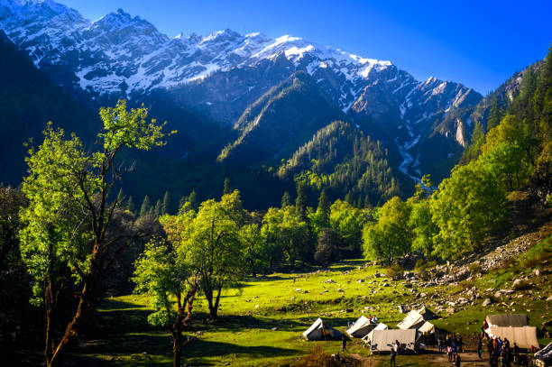

10 Must-Visit Destinations in Himachal Pradesh
Published on May 15, 2023 | 5 min read
Explore the breathtaking beauty of Himachal Pradesh with our curated list of top destinations. From the snow-capped peaks of Rohtang Pass to the spiritual serenity of McLeod Ganj, discover why a motorcycle tour is the best way to experience this Himalayan paradise.
Read More

The Ultimate Guide to Leh-Ladakh: A Biker's Paradise
Published on June 1, 2023 | 7 min read
Embark on an unforgettable journey through the rugged terrain of Leh-Ladakh. Learn about the best routes, essential gear, and breathtaking sights that make this region a dream destination for motorcycle enthusiasts.
Read More

Chandigarh: The Perfect Starting Point for Your Himalayan Adventure
Published on June 15, 2023 | 4 min read
Discover why Chandigarh is the ideal base for your motorcycle trip to the Himalayas. From its modern amenities to its proximity to major routes, learn how to make the most of your stay before hitting the road.
Read More